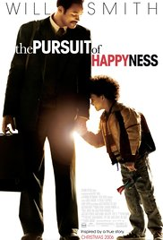
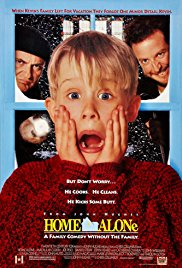
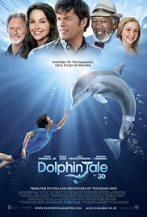
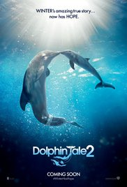

1.The pursuit of happyness

Genres: Biography | Drama
Release Date: 22 March 2007
Descripton: Based on a true story about a man named Christopher Gardner. Gardner has invested heavily in a device known as a "bone density scanner". He feels like he has it made selling these devices. However, they do not sell well as they are marginally better than x-ray at a much higher price. As Gardner works to make ends meet, his wife leaves him and he loses his apartment. Forced to live out in the streets with his son, Gardner continues to sell bone density scanners while concurrently taking on an unpaid internship as a stockbroker, with slim chances for advancement to a paid position. Before he can receive pay, he needs to outshine the competition through 6 months of training, and to sell his devices to stay afloat. Written by John Wiggins, Alf Fonz
2.Home alone

Genres: Comedy | Family
Release Date:27 December 1993
Descripton:It is Christmas time and the McCallister family is preparing for a vacation in Paris, France. But the youngest in the family named Kevin got into a scuffle with his older brother Buzz and was sent to his room which is on the third floor of his house. Then, the next morning, while the rest of the family was in a rush to make it to the airport on time, they completely forgot about Kevin who now has the house all to himself. Being home alone was fun for Kevin, having a pizza all to himself, jumping on his parents' bed, and making a mess. Then, Kevin discovers about two burglars, Harry and Marv, about to rob his house on Christmas Eve. Kevin acts quickly by wiring his own house with makeshift booby traps to stop the burglars and to bring them to justice. Written by John Wiggins
3.Doplhin plate

Genres: Drama | Family
Release Date: 6 October 2011
Descripton: A lonely and friendless boy finds and untangles a hurt dolphin that is caught in a crab trap. He becomes very attached to the dolphin when the tail must be taken off to save the dolphin's life. The boy believes the dolphin would be able to swim normally if it was given a prosthetic tail. Written by Douglas Young (the-movie-guy)
4.Doplhin plate 2

Genres: Drama | Family
Release Date: 11 September 2014
Descripton: It has been several years since young Sawyer Nelson and the dedicated team at the Clearwater Marine Hospital, headed by Dr. Clay Haskett, rescued Winter. With the help of Dr. Cameron McCarthy, who developed a unique prosthetic tail for the injured dolphin, they were able to save her life. Yet their fight is not over. Winter's surrogate mother, the very elderly dolphin Panama, has passed away, leaving Winter without the only poolmate she has ever known. However, the loss of Panama may have even greater repercussions for Winter, who, according to USDA regulations, cannot be housed alone, as dolphins' social behavior requires them to be paired with other dolphins. Time is running out to find a companion for her before the team at Clearwater loses their beloved Winter to another aquarium. Written by Warner Bros.